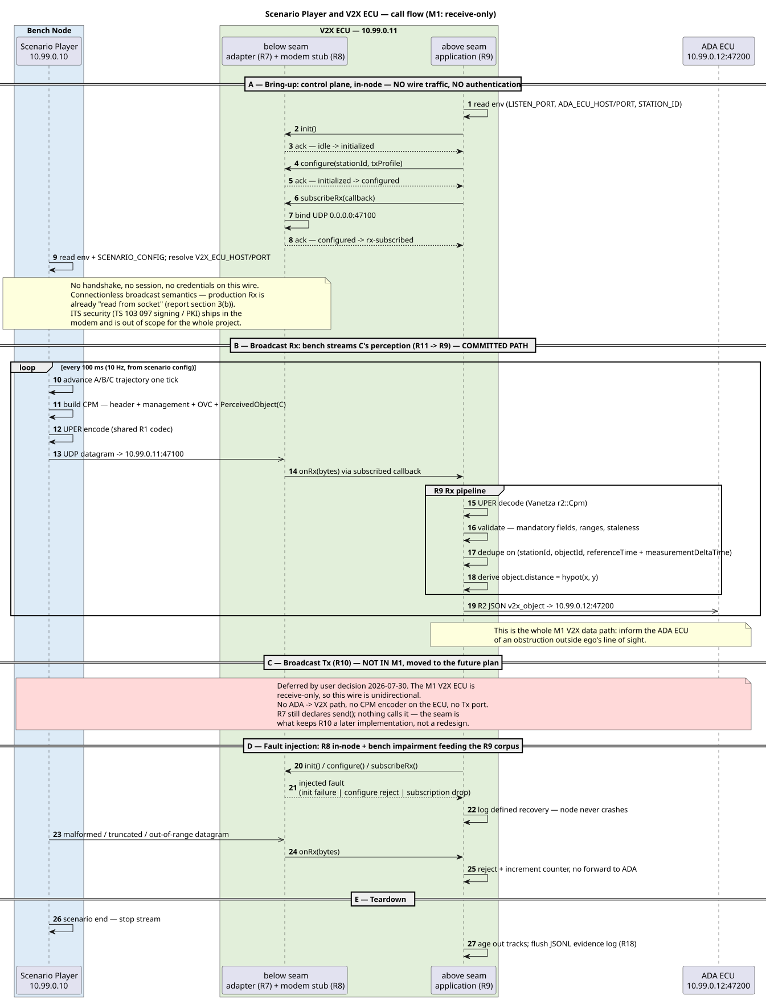

Scenario Player ↔ V2X ECU — Call Flow & Message Structure¶
Status: research note. Not authoritative. The authority is m1-cooperative-awareness.md — R1, R2, R7–R11 and §3. Findings F1–F9 (§6) need ratification before implementation. Verified against: ETSI TS 103 324 v2.1.1 ASN.1, ETSI TS 102 894-2 (CDD) v2.1.1, Vanetza
master— sources in §7.
1. Scope¶
The two nodes and the one wire between them (baseline topology):
| Node | Address | Role on this wire | |
|---|---|---|---|
| Scenario Player | Container Node (bench) | 10.99.0.10 |
emulates the Quectel modem's connection point; generates CPMs describing vehicle C (R11) |
| V2X ECU | Container Node | 10.99.0.11:47100 |
receives, decodes, validates, forwards R2 JSON to ADA (R7–R9; R10 deferred) |
Everything below the R7 adapter seam is UDP on the R6 Ethernet Bridge. Above the seam the application is transport-blind — that is the portability goal.
2. Call flow¶
Sections § A – § E, four of them live. Only § B is on the M1 critical path; § A and § D are in-node (no wire traffic). § C (ego Tx, R10) is struck out — moved to the future plan (user decision 2026-07-30); the M1 V2X ECU is receive-only, so the bench→ECU direction is the only live flow.

Source: scenario-player-v2x-callflow.puml — re-render after editing with java -jar plantuml.jar -tsvg -charset UTF-8 scenario-player-v2x-callflow.puml.
2.1 § A — Bring-up¶
- The R8 stub is in-node, so the
init → configure → subscribeRxFSM produces no packets to the bench. Bench and V2X ECU start independently and in any order. - On real hardware this block becomes telux
start+ Rx/Tx flow setup; the section exists so that swap stays mechanical (R7 port plan).
2.2 § A — Why there is no authentication sub-section¶
| Layer | M1 answer |
|---|---|
| Session / handshake | None. UDP fire-and-forget — real V2X broadcast has no peer session to authenticate against. |
| ITS message security (IEEE 1609.2 / ETSI TS 103 097 signing, enrolment, PKI) | Out of scope for the whole project — the V2X protocol stack ships in the modem (§1 Input constraints). |
| Modem attach / 3GPP registration | Modelled by the R8 stub FSM only (§ A), never on the wire. |
| Network access control | The Room's bridge subnet is the boundary; no in-band credentials. |
Adding a bench↔V2X handshake would lower fidelity — production Rx is already "read from socket" (§3(b)). Recommendation: none on the wire.
2.3 § B — The committed path¶
The only flow R19 depends on. Bench is the sole talker; the V2X ECU never requests, acks, or replies.
2.4 § C — Ego Tx: moved to the future plan¶
R10 is deferred (user decision 2026-07-30) — the M1 V2X ECU is receive-only. Consequences on this wire:
- The wire is unidirectional: bench → V2X ECU only. No Tx port, no bench listener, no ADA→V2X path (F4 is closed, not open).
- The bench needs a CPM encoder only; the V2X ECU needs a decoder only. The R1 codec seam still owns both, so the encoder returns with R10 without a contract change.
- R7's
sendstays declared and unimplemented — the seam is what keeps R10 a later implementation rather than a redesign.
3. CPM vs DENM¶
Both are ETSI ITS facility-layer messages carried in the same ItsPduHeader, distinguished by messageId.
| CPM — Collective Perception Message | DENM — Decentralized Environmental Notification Message | |
|---|---|---|
| Spec | TS 103 324 v2.1.1 | EN 302 637-3 |
messageId |
cpm (14) |
denm (1) |
| Answers | "these are the objects I perceive, where they are, how fast, how sure I am" | "an event of cause X exists at position P until time T" |
| Third-party kinematics | Yes — per-object position, velocity, dimensions, class, confidence | No — event position + cause code only |
| Payload shape | ManagementContainer + up to 8 wrapped containers (§4) | management (actionId, detectionTime, eventPosition, validityDuration) + situation (CauseCode / SubCauseCode) + location + alacarte |
| Trigger | periodic, rate-adaptive (1–10 Hz) | event-driven; repeated until validity expires; supports update / cancellation / negation |
| M1 status | The only type implemented (R1) — bench sends it, V2X ECU decodes it | Not implemented. Named family for future hazard types (slippery road, rocks, holes, police…) |
Why CPM alone satisfies M1: A must compose d_AC ≈ d_AB + d_BC. That needs C's range and velocity as measured by B — a DENM cause code cannot carry it, and CAM describes only the sender. One message type, one codec, one profile (§3(a), decision record).
Cost of adding DENM later: one codec module + one dispatch entry in the R9 Rx pipeline — deferred, not foreclosed (Future developments: extensible message-type dispatch).
4. CPM message structure¶
Structural diagram: cpm-message-structure.drawio (export to .svg alongside it to embed, per the repo's drawio+svg pairing).
4.1 M1 profile — what the bench actually emits¶
One UDP datagram = one UPER-encoded CollectivePerceptionMessage = exactly 2 containers, exactly 1 perceived object.
CollectivePerceptionMessage
├─ header : ItsPduHeader protocolVersion=2 · messageId=cpm(14) · stationId=B
└─ payload : CpmPayload
├─ managementContainer referenceTime · referencePosition [· segmentationInfo · messageRateRange]
└─ cpmContainers (SIZE 1..8)
├─ [id=1] OriginatingVehicleContainer orientationAngle [· pitchAngle · rollAngle · trailerDataSet]
└─ [id=5] PerceivedObjectContainer numberOfPerceivedObjects=1 · perceivedObjects[0] → vehicle C
Containers 2 (RSU), 3 (SensorInformation) and 4 (PerceptionRegion) are unused in M1.
4.2 R1 profile → ASN.1 field mapping¶
Sample column uses the R2 example values from R2.
| R1 profile information | ASN.1 path | Type | Unit / range | Encoded sample |
|---|---|---|---|---|
| Station ID | header.stationId |
StationId |
0..2³²-1 | 1201 |
| — | header.messageId |
MessageId |
cpm(14) |
14 |
| Reference time | payload.managementContainer.referenceTime |
TimestampIts |
0,001 s since 2004-01-01 TAI | — |
| Sender reference position | …managementContainer.referencePosition |
ReferencePosition {latitude, longitude, positionConfidenceEllipse, altitude} |
10⁻⁷ degree | 210285110 / 1058048170 |
| Sender heading | …[id=1].orientationAngle.value |
Wgs84AngleValue |
0,1 degree · 0..3601 | 900 (= 90,0° East) |
| Sender speed | — no field in CPM r2 — | — | — | F1 |
| Perceived object ID | …[id=5].perceivedObjects[0].objectId |
Identifier2B |
0..65535 | 7 |
| Time of measurement | ….measurementDeltaTime |
DeltaTimeMilliSecondSigned |
0,001 s · −2048..2047 | -50 |
| Object relative position | ….position.xCoordinate.value / .yCoordinate.value |
CartesianCoordinateLarge |
0,01 m | 2500 / 120 |
| — position confidence | ….position.{x,y}Coordinate.confidence |
CoordinateConfidence |
0,01 m · 1..4096 | F6 |
| Object velocity | ….velocity.cartesianVelocity.xVelocity.value |
VelocityComponentValue |
0,01 m/s · −16383..16383 | 1520 |
| Object classification | ….classification[0].objectClass.vehicleSubClass |
TrafficParticipantType |
passengerCar(5) |
5 |
| — class confidence | ….classification[0].confidence |
ConfidenceLevel |
1..101 (101=unavailable) |
95 |
| Object count | …[id=5].numberOfPerceivedObjects |
CardinalNumber1B |
0..255 | 1 |
B→C range (R2 object.distance) |
derived, not transmitted | — | m | F7 |
PerceivedObject carries 14 further OPTIONAL fields (acceleration, angles, dimensions, objectAge, objectPerceptionQuality, sensorIdList, correlation matrices, mapPosition). M1 sends none — every one is a future extension point requiring no schema change.
5. Tech stack¶
Copied verbatim from m1-cooperative-awareness.md — no re-research.
Per requirement (§2):
| Req | Tech stack |
|---|---|
| R1 — CPM contract | Vanetza ITS2 ASN.1 codecs (ETSI release-2 CPM, ASN.1 UPER wire encoding; LGPLv3) behind one codec seam shared by every encoder/decoder |
| R2 — V2X→ADA message | nlohmann/json (C++, MIT) |
| R6 — Inter-ECU network | CarSky Ethernet Bridge node; POSIX UDP sockets |
| R7 — Radio adapter seam | — (telux is the mirrored reference API, not a linked dependency) |
| R8 — Modem stub | — |
| R9 — Rx pipeline | Vanetza ITS2 codec; nlohmann/json |
| ~~R10 — Ego Tx~~ | ~~Vanetza ITS2 codec~~ — moved to the future plan |
| R11 — Bench generation | Python; the shared R1 codec (Vanetza-based encoder) |
Per track (§3 stack summary):
| Track / node | Language | Key components |
|---|---|---|
| V2X ECU (Container Node) | C++17 | radio adapter seam (R7) + modem stub (R8) + Vanetza CPM decoder + Rx pipeline (R9) — receive-only; ~~ego Tx (R10)~~ deferred |
| Bench (Container Node) | Python | scenario-configurable CPM generation (R11) via the shared R1 codec |
Selection rationale (§3):
- (a) Family + encoding — Pick: CPM TS 103 324 (C1: Vanetza ships release-2 CPM codecs; C2: one message, one codec, one profile). Pick: Vanetza ITS2 as the single codec source behind one codec seam (C1: one proven codec, golden vectors cannot drift; C4: asn1-only build targets, no full-stack pull-in). Screened out: SAE J2735 BSM (paywalled), asn1tools (no X.681/X.683), raw asn1c (redundant), pycrate (no precompiled CPM).
- (b) Transport under the seam — Pick: thin adapter + modem stub with call-flow FSM and fault injection (C2: least work that still proves the seam; C3: port plan keeps the real-hardware swap open). Middleware screened out on fidelity.
- (c) Bench generation — Pick: self-written Python generator driving the shared R1 codec (C1: deterministic, no engine unknowns; C2: smallest build; C4: zero engine dependency). Screened out: MetaDrive, CARLA (GPU-heavy), SUMO (no perception concept).
- (d) Languages — V2X ECU: C++17 (portability is the node's focus goal, telux is a C++ API, Vanetza is C++ so the codec stays in-process). Bench: Python (fastest to iterate scenario content; reuses the R1 codec for encoding).
6. Findings & open items¶
Ranked by impact on the R1/R11 freeze.
| # | Finding | Recommendation |
|---|---|---|
| F1 | CPM release 2 cannot carry sender speed. OriginatingVehicleContainer is {orientationAngle, pitchAngle?, rollAngle?, trailerDataSet?} — heading/speed were dropped from the release-1 (TR 103 562) container. R1's profile table and R2's sender.speed both require it. |
Keep CPM r2 frozen. Map sender.heading ← orientationAngle; make sender.speed derived at the V2X ECU from consecutive referenceTime/referencePosition deltas, and optional in R2 until two messages have arrived. No committed M1 acceptance criterion consumes B's speed. Fallback if it must be native: r1::Cpm (TR 103 562) carries heading + speed and ships in the same Vanetza build — but that re-freezes R1's family pick. |
| F2 | Vanetza's unqualified asn1::Cpm aliases r1::Cpm (TR 103 562), not the release-2 type. #include <vanetza/asn1/cpm.hpp> and using asn1::Cpm silently compiles the wrong wire format. |
Use vanetza::asn1::r2::Cpm explicitly everywhere; add a CI grep banning bare asn1::Cpm. Pin the variant in the golden vectors. |
| F3 | Python bench → C++ Vanetza encoder path is unresolved — standing open item in node-code-layout.md. | Ranked for [[project-architecture]] to decide in the R11 HLD: (1) a small C++ cpm_encode helper built from the same Vanetza target, invoked by Python over stdin/stdout JSON — reuses the exact R1 codec, mirrors the R12 subprocess pattern already sanctioned; (2) pybind11 binding — more toolchain; (3) pre-encoded vectors + byte patching — drifts, fails R11's "different configs → different streams". |
| ~~F4~~ | ~~R10 has no Tx destination.~~ Closed by the 2026-07-30 R10 deferral — the wire is unidirectional, so no Tx host/port is needed. Recorded here because it is the concrete reason R10 could not have been demonstrated as specified. | No action. Re-open with R10: the V2X ECU would need V2X_TX_HOST/V2X_TX_PORT and the bench a listen port. |
| F5 | Datagram encapsulation is undecided — raw UPER CPM vs a BTP-B/GeoNetworking envelope. R1's acceptance demands the encoding be written into the profile document. | Raw UPER CollectivePerceptionMessage, one PDU per datagram, no GN/BTP. The GN/BTP stack ships in the modem and is out of scope for the whole project; adding an envelope adds a codec the ECU must strip for no acceptance gain. Write it into the R1 profile doc. |
| F6 | Confidence scales do not match. R2 uses floats 0–1; CPM uses ConfidenceLevel 1..101 and CoordinateConfidence 1..4096 (0,01 m). |
Fix the conversion in the R1 profile: r2.confidence = ConfidenceLevel / 100 (clamped, 101 → null); position confidence converts to metres, not to a 0–1 score — it is an accuracy, not a probability. |
| F7 | R2 object.distance is derived, not received. No CPM field carries range; the V2X ECU must compute hypot(x, y). The report's own sample is not self-consistent — x=25.0, y=1.2 gives 25.03, not the stated 25.4. |
State the derivation in the R1 profile and correct the R2 sample. R13 admission (30 m threshold) reads this derived value. |
| F8 | Message rate is unspecified in R1 and R11 ("configurable message rates"). | Default 10 Hz (100 ms), cpm_rate_hz in the scenario YAML — top of the CPM 1–10 Hz range. Never a literal (governing principle 5). |
| F9 | measurementDeltaTime is bounded to ±2047 ms. A scenario that timestamps a measurement further from referenceTime produces an un-encodable CPM. |
Bench-side validation: assert |measurementDeltaTime| ≤ 2047 before encode; V2X ECU rejects and counts violations in the R9 malformed path. |
| — | Object velocity frame is ambiguous — R1 says "C's velocity relative to B"; TS 103 324 expresses PerceivedObject.velocity in the sender's cartesian reference frame. |
Fix one convention in the R1 profile and state it; the bench and the V2X ECU must not disagree. |
7. Sources¶
- ETSI TS 103 324 v2.1.1 — CPM ASN.1 (
asn/CPM-PDU-Descriptions.asn,CPM-OriginatingStationContainers.asn,CPM-PerceivedObjectContainer.asn) - ETSI TS 102 894-2 v2.1.1 — Common Data Dictionary (
ETSI-ITS-CDD.asn) - ETSI TS 103 324 V2.1.1 specification PDF
- Vanetza
vanetza/asn1/cpm.hpp—r1::Cpm/r2::Cpmand the default alias - Vanetza issue #194 — adding TS 103 324 v2.1.1 CPM
- ETSI TR 103 562 v2.1.1 — pre-standard CPM (release-1 container with heading/speed)